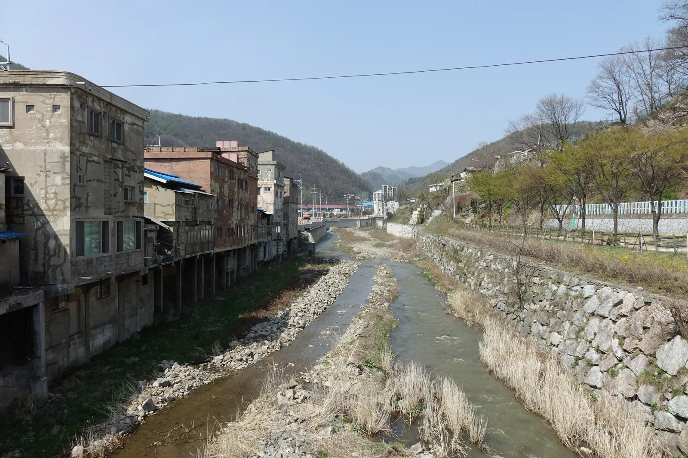
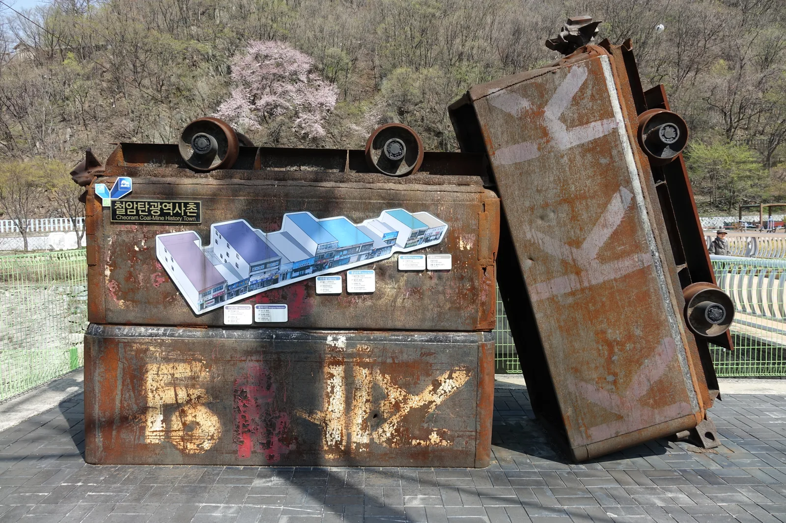
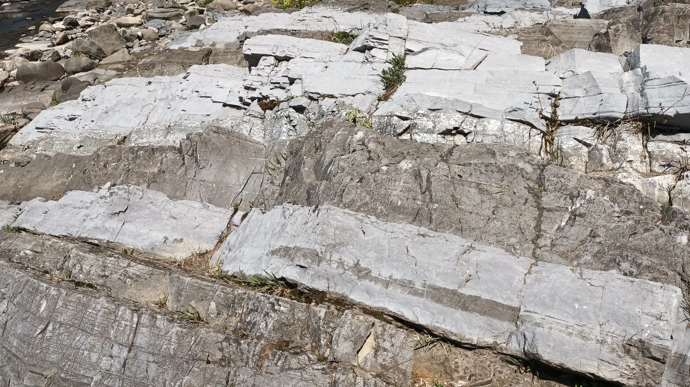
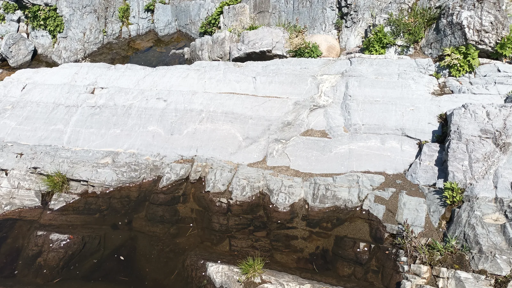
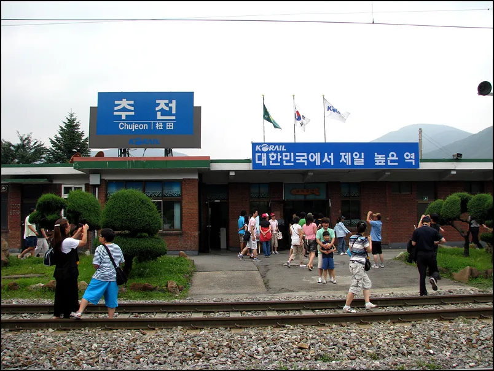

▲ 철암천변의 '까치발 건물'. 하천 바닥에 목재·철재 지지대를 세워 집을 넓힌 탄광촌 특유의 건축이다 ⓒ Wikimedia Commons
강원 태백시 철암동은 해발 700m 고원에 자리한 옛 탄광촌이다. 1960~80년대 한때 50여 개 광산이 몰려 있었고, 전국 석탄 생산량의 30% 이상이 이곳에서 나왔다. 그러나 1990년대 석탄산업 합리화 정책 이후 급격히 쇠퇴하면서, 마을은 그 시절 모습을 고스란히 간직한 채 시간이 멈춘 듯 남았다. 이 탄광촌이 매년 10월이면 완전히 다른 얼굴을 보인다. 철암천을 따라 단풍이 절정에 이르고, 그 풍경에 맞춰 철암단풍축제가 열리기 때문이다. 2026년으로 15회째를 맞는 이 축제는 10월 16일부터 18일까지 사흘간 철암동 일원에서 열린다. 탄광촌의 배경부터 축제 일정, 단풍 절정 시기, 가는 법과 주차, 구문소·추전역 연계 코스까지 방문 전 확인할 정보를 정리했다.
1. 철암동 — 탄광촌에서 단풍 명소로

▲ 철암천 계곡을 따라 늘어선 옛 탄광촌 건물들. 산에 둘러싸인 좁은 골짜기에 도시가 들어선 지형을 한눈에 볼 수 있다 ⓒ Wikimedia Commons
철암동은 평균 해발 700m 고원에 자리한 도시다. 석탄 산업이 호황이던 시절 50여 개 광산이 몰려 있었고, 한때 전국 석탄 생산량의 30% 이상이 이 일대에서 채굴됐다. 광부와 그 가족들이 몰려들면서 좁은 하천변까지 집을 지어야 했는데, 그 결과 탄생한 것이 '까치발 건물'이다. 철암천 바닥에 목재나 철재로 지지대를 세우고 그 위로 집을 넓힌 구조로, 부족한 평지 대신 하천 위 공간을 살림집으로 만든 탄광촌의 상징이다. 신설교 남쪽에서는 이런 까치발 건물 11동이 나란히 이어진 모습을 볼 수 있다.
1990년대 석탄산업 합리화 정책으로 광산이 문을 닫으면서 철암은 급격히 쇠퇴했다. 사람들의 발길이 끊긴 자리에는 그 시절 생활상이 그대로 남았고, 2014년 태백시는 철암역 앞 폐광촌 일부를 주민들과 협의해 철암탄광역사촌으로 조성했다. 옛 건물의 외형은 최대한 살리고 내부만 박물관·전시 공간으로 고쳐, 지금은 광부의 생활상을 담은 벽화가 1km 가까이 이어지는 골목과 함께 관광 자원으로 활용되고 있다. 다만 마을 안쪽에는 아직 빈집도 적지 않아, '벽화마을'이라는 이름과는 다른 정경이 함께 남아 있다.
대한민국 구석구석에서 철암역·탄광역사촌 소개 확인 가능2. 제15회 철암단풍축제 — 10월 16~18일

▲ 철암탄광역사촌 입구의 폐광차 조형물. 실제 사용되던 광차를 재활용해 마을 이정표로 세워 두었다 ⓒ Wikimedia Commons
철암동 주민자치위원회가 꾸린 축제위원회는 2026년 철암단풍축제 일정을 10월 16일부터 18일까지 사흘로 확정했다. 강원종합뉴스(KTN) 보도에 따르면, 위원회는 기후 변화로 매년 달라지는 단풍 시기를 고려해 날짜를 정했고, 인근 쇠바우골 탄광문화 고기축제와 연계하는 방안도 함께 검토하고 있다. 목표는 볼거리와 먹거리가 어우러진 철암만의 축제로, 철암역·탄광문화유산·단풍 경관을 하나로 묶어 지역 상권과 관광을 함께 살리는 것이다.
2026년 세부 프로그램은 아직 공식 발표 전이지만, 참고할 만한 전례가 있다. 바로 전 해인 2025년 10월 18일에는 철암 쇠바우골 탄광문화장터 일원에서 태백시시설관리공단 주최로 '화(火)기애애, 매력철철(鐵鐵) 쇠바우 레트로 구이 페스타'가 열렸다. 화로 테이블을 활용한 레트로 구이터, 추억의 DJ박스, '황금 단풍잎을 찾아라' 이벤트, 레트로 교복 포토존, 전통놀이 체험 등 세대를 아우르는 프로그램으로 꾸며졌다. 같은 시기 열린 '태백 in 단풍 백패킹 페스티벌'에는 600명 넘는 참가자가 몰리기도 했는데, 코스는 철암초교에서 출발해 철암단풍군락지·쇠바우골탄광문화장터·철암탄광역사촌·철암역·광부의 출근길을 거쳐 365세이프타운으로 이어졌다. 2026년 정확한 프로그램은 태백시 공식 공지로 별도 확인이 필요하다.
강원종합뉴스에서 축제 일정 확정 소식 확인 가능3. 철암 단풍 군락지 — 절정 시기와 접근
철암 단풍 군락지는 철암동 산 64-1 일대, 철암천 병풍바위 절벽을 따라 형성된 단풍 명소다. 태백에서 단풍이 가장 먼저, 가장 짙게 드는 곳으로 꼽히며 추천 방문 시기는 대체로 10월 중순~11월 초다. 산책로는 완만하고 잘 정비돼 있어 아이나 어르신을 동반한 가족 단위 방문객도 무리 없이 걸을 수 있다. 상시 개방이며 입장료는 무료다.
| 항목 | 내용 |
|---|---|
| 위치 | 강원 태백시 철암동 산 64-1 |
| 추천 시기 | 10월 중순 ~ 11월 초(단풍 절정) |
| 접근 | 철암역에서 도보 이용 가능 |
| 주차 | 가능, 무료 |
| 입장료 | 무료, 상시 개방 |
철암역에서 걸어서 닿을 수 있는 거리라 '뚜벅이' 여행자에게도 부담이 적다. 통리장 인근 경동아파트 정류장에서 시내버스를 타고 철암초등학교 정류장에 내려도 군락지 초입까지 금방 이어진다.
4. 태백산 단풍 — 절정 시기와 코스
철암에서 조금 더 발을 넓히면 태백산 단풍도 놓치기 아깝다. 태백산 단풍은 대개 10월 중순부터 11월 초 사이 절정을 이루며, 봄 철쭉·겨울 눈꽃과 함께 태백산의 사계절 명물로 꼽힌다. 대표 코스는 두 가지다. 유일사 코스는 유일사 주차장에서 출발해 주목 군락지를 지나 천제단·장군봉으로 오르며, 왕복 약 8~9km다. 당골 코스는 태백 당골(석탄박물관 주차장)에서 망경사를 거쳐 천제단으로 오르는 길로, 경사가 완만한 편이다. 유일사에서 올라 천제단을 거쳐 당골로 내려오는 종주 코스(약 7.5km, 4시간 안팎)를 택하는 경우도 많다.
| 코스 | 거리·시간(참고) | 특징 |
|---|---|---|
| 유일사 코스 | 왕복 약 8~9km | 주목 군락지·천제단·장군봉 |
| 당골 코스 | 약 8km, 경사 완만 | 망경사 경유, 석탄박물관 주차장 이용 |
| 유일사~당골 종주 | 약 7.5km, 4시간 안팎 | 천제단을 거쳐 반대편으로 하산 |
※ 거리·시간은 참고용이며, 실제 소요시간은 날씨와 개인 체력에 따라 달라질 수 있다.
천제단에서는 매년 개천절(10월 3일)에 제의가 열린다. 단풍철과 겹치는 시기이니 개천절 전후로 방문할 계획이라면 등산로가 평소보다 붐빌 수 있다는 점을 감안하는 것이 좋다.
5. 가는 법과 주차
철도로는 영동선 철암역이 가장 가깝다. 청량리에서 무궁화호·ITX 등으로 태백역까지 이동한 뒤, 영동선을 갈아타거나 시내버스로 철암까지 들어갈 수 있다. 태백시 시내버스 1번(장성) 노선이 장성·철암·통리를 경유하며, 태백터미널에서 첫차 06:50부터 막차 22:10까지 하루 22회 운행된다.
자가용을 이용할 경우 태백에는 고속도로가 없어 국도(31호선·38호선 등)로 접근해야 한다. 철암탄광역사촌과 철암 단풍 군락지 모두 인근에 무료 주차 공간이 마련돼 있지만, 축제 기간 사흘간은 방문객이 몰려 골목 안쪽 주차 공간이 금방 찰 수 있다. 가급적 오전 이른 시간에 도착하거나, 철암역 인근에 차를 세운 뒤 도보로 이동하는 편이 안전하다.
K-트립팁스에서 철암단풍군락지 위치·주차 정보 확인 가능6. 연계 여행 코스 — 구문소·추전역·연화산 전망대

▲ 구문소의 퇴적암 지층. 철암천과 황지천이 만나 오랜 세월 바위를 깎아 만든 지형으로, 천연기념물 제417호로 지정돼 있다 ⓒ Wikimedia Commons
철암에서 차로 멀지 않은 거리에 구문소가 있다. 철암천과 황지천이 만나 산을 뚫고 흐르는 독특한 지형으로, 천연기념물 제417호로 지정된 국내 대표 지질 명소다. 원래 이름은 '뚜루내'였는데, 구멍을 뜻하는 옛말 '구무'가 한자 '구문(求門)'으로 바뀌어 지금의 이름이 됐다. 바로 옆 태백고생대자연사박물관에서 이 일대의 지질 형성 과정을 함께 둘러볼 수 있다.

▲ 구문소 계곡의 바위 절벽과 물웅덩이. 오랜 침식으로 만들어진 지형이 그대로 드러나 있다 ⓒ Wikimedia Commons
조금 더 멀리 가면 추전역이 있다. 해발 855m에 자리해 '하늘 아래 첫 번째 역'으로 불리는, 국내에서 가장 높은 곳에 있는 철도역이다. 1973년 무연탄 수송을 위해 문을 열었지만 1995년부터 여객 취급이 중지돼 지금은 화물역으로만 남아 있다. 다만 역 건물과 '대한민국에서 제일 높은 역' 표지판은 여전히 태백을 대표하는 사진 명소로 꼽힌다.

▲ 추전역 표지판. 해발 855m로 국내 철도역 중 가장 높은 곳에 있어 붙은 별명이다 ⓒ Wikimedia Commons
시간이 더 있다면 연화산 둘레길 전망대도 코스에 넣을 만하다. 해발 1,171m 연화산 중턱에 있으며, 여성회관 정문 옆 입구에서 오름뫼샘터(500m)를 지나 전망대(1.2km)까지 오르면 태백 시내는 물론 태백산·함백산·은대봉·금대봉까지 한눈에 들어온다. 철암 단풍 군락지, 탄광역사촌, 구문소, 추전역, 연화산 전망대를 하루 코스로 묶으면 탄광촌의 역사와 자연 지형, 단풍을 모두 돌아보는 일정이 완성된다.
✅ 태백 철암단풍축제, 가기 전 체크리스트
· 제15회 철암단풍축제는 2026년 10월 16~18일, 철암동 일원에서 개최
· 철암동은 해발 700m 옛 탄광촌으로, 철암천변 '까치발 건물'과 철암탄광역사촌(2014년 조성)이 핵심 볼거리
· 철암 단풍 군락지(철암동 산 64-1)는 10월 중순~11월 초가 절정, 상시 개방·무료·주차 무료
· 태백산 단풍도 같은 시기 절정, 유일사·당골 코스(왕복 8~9km 안팎)로 접근
· 철도는 영동선 철암역, 자가용은 국도 31·38호선 이용(태백엔 고속도로 없음)
· 연계 코스로 구문소(천연기념물 제417호), 추전역(해발 855m, 국내 최고지 기차역), 연화산 전망대 추천
· 2026년 세부 프로그램은 태백시·축제위원회 공식 공지로 재확인 필요